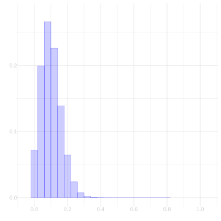
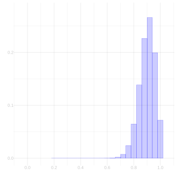

Download this assignment — unzip it, open homework-bootstrap.qmd in Positron, and answer inside the answer blocks.
$$ \newcommand{X}{} \newcommand{Y}{}
$$
The support code loads a simulated Georgia voter population into pop. Its binary turnout response is y. The population size is m. The indices J draw our sample of size n = 625; X = x[J] and Y = y[J] are the sample responses.
cat("Population frequency θ =", round(mean(y), 3), "\n")
Population frequency θ = 0.698
cat("Sample frequency θ̂ =", round(mean(Y), 3), "\n")
Sample frequency θ̂ = 0.707
cat("Sample size n =", n, "\n")
Sample size n = 625
cat("Population size m =", m, "\n")
Population size m = 7233584
Exercise 13.1
Exercise
Draw a fresh sample of size \(n\) from pop, save it as sam, and plot the sampled values of x and y. Because both variables are binary, jitter the points so that repeated observations do not sit exactly on top of one another.
J.sample =# draw n row indices from the populationsam =# select those rows from popggplot(sam) +# plot y against x, jittering overlapping points
Bootstrap vs. Binomial
In class, we argued that for a binary response, the bootstrap sampling distribution of the sample frequency \(\hat\theta\)is our plug-in Binomial estimate of the sampling distribution: the distribution of the frequency of ones in \(n\) draws, with replacement, from a ‘population’ where that frequency is \(\hat\theta\)—our sample. Let’s confirm that empirically in our Georgia turnout poll, where Y is our sample of \(n=625\) responses.
Exercise 13.2
Exercise
Draw 10,000 samples from the bootstrap sampling distribution of \(\hat\theta\). Plot them as a bar plot, and overlay the plug-in Binomial estimate—the probabilities \(\hat P(\hat\theta = s/n) = \binom{n}{s}\hat\theta^s(1-\hat\theta)^{n-s}\), which you can get from dbinom(0:n, n, mean(Y)). Do they agree?
bootstrap.samples =1:10000|>map_vec(function(.) {# draw one sample from the bootstrap sampling distribution})ggplot() +geom_bar(aes(x=bootstrap.samples, y=after_stat(prop)), alpha=.3) +geom_line(aes(x=(0:n)/n, y=dbinom(0:n, n, mean(Y)))) +xlim(.6, .8)
Coverage: How Many Bootstrap Reps Do You Need?
The bootstrap gives us a confidence interval by simulating the sampling distribution of our estimate. But the simulation is itself a random draw—we only take a finite number of bootstrap samples. If we take too few, the interval we calibrate will be noisy, and its coverage might fall short of the 95% we promise. How many bootstrap reps are enough?
We can check this in a setting where we know the right answer. For a binary response, the exact sampling distribution of the sample frequency \(\hat\theta\) is Binomial, so we can compute an exact 95% confidence interval (the Clopper–Pearson interval) and compare it to the bootstrap interval.
Binary case
Our Georgia turnout population y has true frequency \(\theta = 0.698\). Draw 500 fresh samples of size \(n=625\) from this population. For each sample, compute two intervals:
The exact Binomial 95% interval (Clopper–Pearson). In R, binom.test(s, n)$conf.int returns it.
A bootstrap 95% interval using your bootstrap.interval function with \(B\) bootstrap reps.
First use \(B=1000\). Compute the coverage of both the exact interval and the bootstrap interval across the same 500 samples, and report the two numbers. They should agree up to simulation noise.
Then do this for several values of \(B\): 10, 30, 100, 300, 1000, 3000. For each \(B\), compute the fraction of the 500 samples whose bootstrap interval contains \(\theta\). Plot that coverage fraction against \(B\) on a log scale. Add a horizontal line at 0.95.
What do you see? How many bootstrap reps are needed before the bootstrap’s coverage matches the exact interval’s?
Exercise 13.3 (Part A – Binary coverage vs bootstrap reps)
Exercise
Before writing the function, use \(B=1000\) to calculate the exact-interval coverage and bootstrap-interval coverage across the same 500 polls. Report both, and confirm that they agree up to simulation noise.
Then write a function coverage.vs.reps that takes a population vector y, a sample size n, a vector of bootstrap‑rep counts reps, and the number of simulated polls N. It should return a data frame with columns reps and coverage giving the fraction of intervals that contain the true population mean for each rep count.
Use it to produce the plot described above.
coverage.vs.reps =function(y, n, reps =c(10, 30, 100, 300, 1000, 3000), N =500) {# your code here}
TipHint
Loop over reps. For each rep count \(B\), loop over N polls. Inside that loop: - Draw a fresh sample from y. - Compute the exact Binomial interval with binom.test. - Compute the bootstrap interval using bootstrap.interval but with only \(B\) bootstrap draws (you’ll need to modify bootstrap.interval to accept a reps argument). - Record whether each interval contains mean(y). - Average over the N polls to get coverage for this \(B\).
Part B – Convergence rate
Look at the plot. Does coverage approach 0.95 from below, from above, or does it oscillate? About how many bootstrap reps are needed to get within 0.005 of the target coverage (i.e., coverage between 0.945 and 0.955)?
Now repeat the same experiment with a different population frequency, say \(\theta = 0.2\). Does the answer change?
Checking Coverage in the Vote-History Example
Where the bootstrap earned its keep in class was the categorical response: vote history, the number of the last 5 elections each person voted in. There’s no nice parametric form for the sampling distribution of its mean, so we bootstrapped instead. Here’s the population and sample from class: h is vote history for everyone in Georgia, and H is what we observe for the \(n=625\) people in our turnout sample.
Our point estimate of the population’s average vote history \(\mu = 2.896\) is the sample mean \(\bar H = 2.901\), and we calibrate an interval around it using the bootstrap: give it arms spanning the middle 95% of its bootstrap sampling distribution. The 95% is a claim about repeated polling: if we ran our poll over and over, drawing a fresh sample each time and calibrating a fresh interval from it, about 95% of those intervals would contain \(\mu\). In real life we can’t check that claim—we get one sample, and we don’t know \(\mu\). In our simulation we can.
Exercise 13.4 (Part A)
Exercise
Write a function bootstrap.interval that takes a sample—any numeric vector, e.g. H—and returns a 95% confidence interval for the corresponding population mean, calibrated using the bootstrap. It should return a vector of length 2: the lower and upper bounds. Use the function width from our shared code to choose the interval’s width. Report the interval you get for the sample H.
bootstrap.interval =function(H, reps =1000) { n =length(H) H.bar =mean(H) boot.means =1:reps |>map_vec(function(.) {# draw one sample from the bootstrap sampling distribution of the mean }) w =# calibrate a width using boot.meansc(H.bar - w/2, H.bar + w/2)}bootstrap.interval(H)
Exercise 13.5 (Part B)
Exercise
Now run the poll over and over. Draw 1000 samples of size \(n=625\) with replacement from the population h. For each one, calibrate an interval using your function from Part A. What fraction of your 1000 intervals contain \(\mu\)? Is it close to 95%?
This computation takes a minute—you’re drawing a thousand bootstrap samples for each of a thousand polls. That’s not a mistake. Each poll gets its own sample, so it has to get its own bootstrap: the width is calibrated fresh, from that poll’s sample, every time. That’s what checking a coverage claim costs.
covers =1:1000|>map_vec(function(.) {# draw a sample of size n from the population h# calibrate an interval from it# does the interval contain mu?})mean(covers)
Exercise 13.6 (Part C – Nonbinary convergence)
Exercise
Repeat the convergence experiment for the vote-history variable h. For each value \(B = 10, 30, 100, 300, 1000, 3000\), draw 500 fresh samples of size \(n=625\) from h, calibrate a bootstrap interval using \(B\) bootstrap draws, and record the fraction of intervals that contain the population mean mean(h). Plot coverage against \(B\) on a log scale and add a horizontal line at 0.95.
Does the nonbinary case need more bootstrap reps than the binary case to achieve stable coverage? Explain what you see.
You can answer everything in this section without computing anything. Find the right way to look at it, and the answer reads off.
Here are the sampling distributions of the sample frequency \(\hat\theta\) for two polls, each based on a sample of size \(n=25\) drawn with replacement. On the left, the population frequency is \(\theta = 0.1\). On the right, it’s \(\theta = 0.9\).

Figure 13.1: θ = 0.1

Figure 13.2: θ = 0.9
These are perfect mirrors of each other.
Exercise 13.7 (Mirror Images)
Exercise
Describe the precise sense in which that’s true. Ideally, draw it. Then argue, as best you can, why this is the case.
TipHint
If \(Z = 1_{=y}(Y)\), what is \(1-Z\)?
Exercise 13.8 (The Rolls You Keep)
Exercise
Read the appendix on throwing rolls away at the end of this homework first. Roll a d12 and keep the roll only when it is one of \(1,\ldots,10\).
What is the distribution of a retained roll? Use symmetry to argue why each of the ten retained values has the same probability.
TipHint
Before the rejection rule, the d12 treats all twelve faces symmetrically. Does the rule that decides whether to retain a roll distinguish among any of the faces \(1,\ldots,10\)?
Exercise 13.9 (Shrinking Bars)
Exercise
In class, when we compared sampling distributions at different sample sizes, the bars got shorter as the sample size grew—even though the distribution was getting narrower, which sounds like the bars should be getting taller. Somebody asked why, and it’s an important point, so let’s nail it down.
Why do the bars get shorter? And what should we put on the y-axis instead, so that sampling distributions at different sample sizes come out at comparable heights—so we can lay them on the same axes and see what’s actually changing?
Calculating Sampling Distributions
You’re canvassing a street of \(m=10\) houses, numbered 1 through 10, asking a Yes/No question. Unbeknownst to you, the people at houses 1, 2, 3, and 10 would say Yes and everyone else would say No. That’s a frequency of \(\theta = 2/5\), and the Yeses are neighbors: on a walk that loops from house 10 back to house 1, they’re four in a row.
Our usual scheme would be to roll the d10 \(n\) times and knock on the doors it names. The schemes below are different, and so are their sampling distributions. Both are small enough to calculate by hand: list every sample the scheme can produce, work out each one’s probability, and tally up the values of your summary.
Exercise 13.10 (One Roll and a Walk)
Exercise
Rolling the d10 over and over is tiring, so you roll it once. You knock at the house it names and at the next three houses up the street, wrapping around to house 1 if you run past house 10. That’s a sample of size \(n=4\).
Calculate the sampling distribution of the number of Yeses you hear, and draw it as a bar plot. Then compare it to the sampling distribution for our usual scheme, four rolls of the d10—that’s \(\text{Binomial}(4, 2/5)\). Do the two schemes agree on the average number of Yeses? On how spread out it is? What is it about this street that makes them come out so different?
Exercise 13.11 (Splitting the Street)
Exercise
You and a friend decide to split the work: you take houses 1 through 5, your friend takes houses 6 through 10. You each pick one house uniformly at random from your own half and knock. That’s a sample of size \(n=2\): your response \(Y_1\) and your friend’s \(Y_2\).
Calculate the sampling distribution of the number of Yeses \(S = Y_1 + Y_2\). Then compare it to the one for two rolls of the d10 over the whole street—that’s \(\text{Binomial}(2, 2/5)\). Same mean? Same distribution? The two-stage derivation from class breaks somewhere when the halves are different like this. Where?
What Changes If You Change This
The derivation had two stages, and each one needed something to be true. Stage 1 needed every roll sequence to be equally likely, so that adding them up was counting them. Stage 2 needed every response sequence with the same sum to carry the same probability, so that adding those was counting too. Change the setup and you can ask which of those two survives.
ExerciseThe Only Die You Have Is A d12
Ten voters, and no ten-sided die in the drawer. So you roll a twelve-sided one and agree that an \(11\) or a \(12\) counts as a \(10\). Every call is still made the same way, independently of the ones before it.
Which of the two stages still works, and what happens to the answer?
ExerciseA Third Answer
Now suppose people can say Yes, No, or Undecided, and you’re still after the number of Yeses.
Which of the two stages still works?
Appendix: Throwing Rolls Away
The d12 has a fix, and it’s the obvious one. Instead of counting an \(11\) or a \(12\) as a ten, roll again. Keep rolling until you get a number you can use.
Every roll you keep is equally likely to be any of the ten, because the rule for throwing one away treats all ten usable faces alike—an \(11\) and a \(12\) go in the bin no matter who you were about to call. Conditional on being kept, symmetry therefore assigns probability \(1/10\) to each retained face. So stage 1 is counting again, \(\theta_1\) is the population frequency again, and the answer is the one we derived.
This procedure is called rejection sampling: use a tool that gives one distribution, discard outcomes outside the target, and keep a draw whose retained distribution is the one you want.